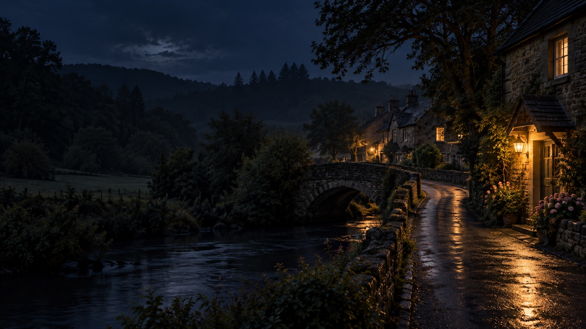
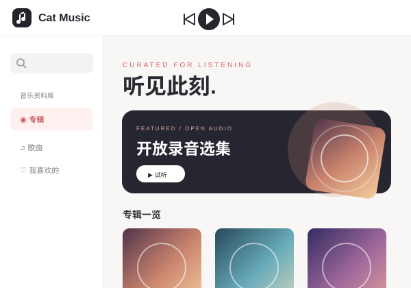
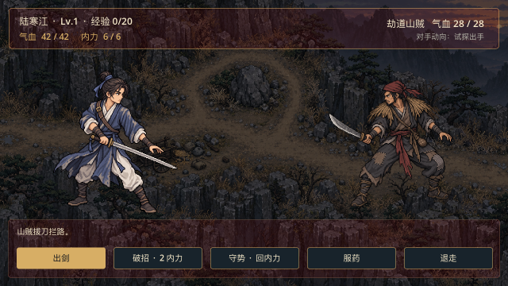
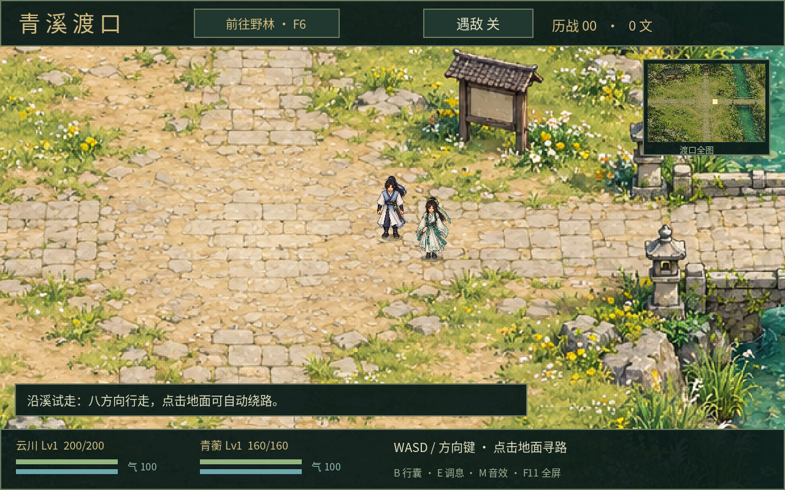

交互探索 · 3D
从太阳出发，观察十个天体的公转自转与地表细节。
CURATED INTERACTIVE LAB · 2026
把灵感，做成
把灵感，做成
可以玩的东西。
这里收藏了借助 AI 打造的 18 个静态实验：从 Three.js 星际与园林、水墨古琴长卷、WebGL 2 雨夜玻璃，到 Godot 4 像素武侠与经典街机重制——全部可在浏览器里直接点开探索。
18 PROJECTS
独立可玩入口
5 GENRES
跨维度创作主题
0 BACKEND
纯本地静态直开
SELECTED WORKS
作品一览.
点击卡片直接进入作品，或点右下角「档案 / 预览」
查看快捷键、创作细节并在当前页内试玩。
漫游 · 3D
在一方粉墙黛瓦的体素园林里，换个角度看江南。
江南园林小景
空间设计 · 3D
73㎡ 小家，一键切换三种生活方案与昼夜日照。
第二间房
滚动阅读 · 水墨
跟着六段山水故事缓缓读完一卷，可伴古琴清音。
山水有归处
生活模拟 · 3D
陪 Miri 做饭、画画、摆家具，打理紫蓝巷的日常。
模拟时光

06 / 18 WebGL 2 · 雨滴着色器
氛围记录 · 雨声
在雨夜的窗前，写下今天想记住的事，听风听雨。
雨窗手记
亲子认知 · 英文启蒙
36 张手绘果蔬闪卡，一起看图、滑动与听英文发音。
小小丰收
滚动叙事 · 海景
跟随海与光，走过从启程到归来的四幕动态潮汐。
潮汐之间
小游戏 · 纸牌
翻牌、整理花色，支持 1/3 张发牌与无限撤销。
纸牌接龙
小游戏 · 街机
驾驶像素战机，迎击 50 敌机编队与俯冲弹幕。
太空射击
小游戏 · 经典
沿着网格不断前进与成长，记得给自己留条路。
贪吃蛇
小游戏 · 街机
10 个霓虹关卡与爆破连锁，适配手机竖屏滑动操控。
打砖块
小游戏 · 经典
霓虹配色搭配幽灵预览、双旋控制与消行粒子。
俄罗斯方块
小游戏 · 横版动作
穿过月夜像素城堡，跳跃迎敌并挑战关底 Boss。
横版动作 Demo

15 / 18 Web Audio · 频谱波形
音乐播放器 · 静态演示
浏览示例专辑资料库，试听开放授权录音与实时频谱。
Cat Music

16 / 18 Godot 4 · ~42 MB
像素武侠 · Godot 4
重访乌篷渡与荒山驿道，体验第一章剧情与回合对决。
长风传 · Godot 版

17 / 18 Godot 4.7.2 · ~58 MB
像素武侠 · 探索与回合战斗
与云川、青蘅漫步青溪渡口，前往青岚野林并肩作战。
碎岳 · 同行
重装长卷 · 水墨
三景平推活水墨、夜读竖排与自题钤印，让长卷在掌心流转。
山水有归处 · 重装版
没有找到匹配的作品
试试更换关键词（如 Three.js、Godot、水墨、街机），或重置全部分类筛选。
EXPLORATION TRACKS
按兴致逛逛.
不知道先点哪一个？可以从下面五条线索开始，
或者在根目录启动本地服务以解锁全部体验。
本地运行说明
绝大多数 3D 与 Godot 作品使用了 ES Modules、GLB 模型或 WebAssembly 解压流，建议在仓库根目录启动轻量静态服务器再访问 http://localhost:8767/。
python3 -m http.server 8767
首页快捷键
无需鼠标也能轻松翻阅全部展品与打开详情预览。
/ 搜索作品
1–6 切换分类
R 随机看一个
T 日光 / 夜游
Esc 关闭预览